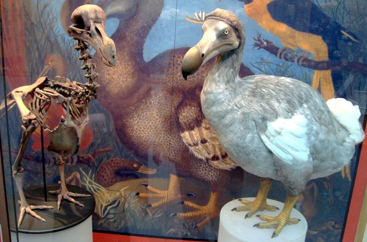

|
도도(도도새)
|
||
|  | ||
| Apetery Shaw, 1813 | ||
분류 |
계 |
동물계 |
| 문 | 척삭동물문(Chordata) |
|
| 강 | 조강(Aves) |
|
| 목 | 비둘기목(Columbiformes) |
|
| 과 | 비둘기과(Columbidae) |
|
| 속 | †도도속(Raphus) |
|
| 종 | ||
| †도도(R. cucullatus) | ||
-
1.개요
-
2.멸종 이유
-
3.도도나무
-
4.관련 영상
Youtube:https://www.youtube.com/embed/xTXdX_INx38
비교적 근래 멸종한 동물 중에서는 우리에게 제법 친숙하게 등장하는 날지 못하는 조류. 그리고 인류가 얼마나 잔인한 짓을 할 수 있는지, 외래종을 생각 없이 방생하면 어떤 결과가 나오는지 보여준 예. 도도(Dodo)라는 이름은 '바보'를 뜻하는 포르투갈어 단어로, 날지도 못하는 게 사람을 전혀 무서워하지 않았기 때문에 붙여졌다. 모리셔스 섬에 서식했다. 칠면조보다 크고 날지 못했으며 오직 조류들만 사는 섬이었기에 천적의 위험도 없었다. 즉 자연산 닭둘기. 비록 멸종하였으나, 모리셔스 섬의 특산종이었던 만큼 모리셔스의 국장에도 묘사되어 있다. 또한 오오새 아종 전부, 캐롤라이나잉꼬, 모아 등과 함께 복원할 동물 중 하나로 지정되었다.
유럽의 선원들이 모리셔스 섬을 경유지로 삼아 정박하자, 도도는 사람이 신기해서 선원들을 쫄래쫄래 따라다녔다. 네덜란드인은 이 새를 먹어보고 더럽게 맛이 없다는 이유로 Walgvogel, 즉 더러운(nasty)새라고도 불렀다. 맛이 좋아 많이 잡아먹었다는 이야기도 있지만 여행비둘기 일화와 헷갈린 것이다. 도도는 정말 더럽게 맛이 없었다는 기록만 있다. 마빈 해리스가 쓴 인류학 교양서 '작은 인간'에서는 인간의 보편적인 교육수준이 얼마나 중요한지 도도를 사례로 제시한다. 어느 정도 환경보호, 동물과 인간이 공존할 필요성 등을 배운 현대인이라면 도도 같은 새가 따라와도 그 때문에 해를 입지 않는 한 대부분은 귀엽든 싫든 내버려두거나 쫓아내는 정도로 그치겠지만, 그딴 거 모르는 17세기 뱃사람들은 아무 이유도 없이 재미거리로 먹지도 않을 도도새의 머리를 몽둥이로 내려쳤을 것이라고 한다. 이 점엔 선원이라는 것도 한몫 했는데, 그 당시 선원들은 사회에서 질 나쁜 범죄자 즉, 흔히 해적이라고 불리우는 작자들이 많이 몰려간 직업이었다.[3] 마지막 큰바다오리 한 쌍이 선원에게 맞아 죽어 멸종한 이유와도 비슷하다. 이후 네덜란드가 이 섬을 유배지로 정하고, 또한 쥐, 돼지, 원숭이, 개, 고양이 등의 포유류를 배를 통해 섬으로 들어왔다. 이 동물들은 섬을 차지하고 도도의 서식지를 파괴했으며 한 번에 한 개만 낳는 도도의 귀중한 알을 훔쳐먹었다. 인간이 아무 생각 없이 데려온 외래종들에게 말그대로 초토화당한 것. 이미 개체수가 많이 줄어들었던 도도는 결국 1681년 발견된지 단 100년만에 멸종했다. 영국 자연사 박물관에 유일한 박제 표본이 있었는데 현재는 머리와 다리 부분만 남아서 전신 모습은 그림에서나 볼 수 있다.[4] 머리와 다리만 남은 이유로는 도도새가 멸종되고 한참 지난 1755년, 벌레가 먹는 등 보존 상태가 나빠지자 박물관장이 보기 싫다는 이유로 모닥불에 던져 버렸다는 설이 많이 알려져 있다. 그러나 큐레이터가 그때 이미 심하게 삭아 버린 표본에서 그나마 남은 것만이라도 보존처리하려고 했기 때문이라고도 하는 주장도 있다.
이 섬에는 칼바리아(Calvaria) 혹은 탐발라코크(Tambalacoque)라고 하는 13그루밖에 없었던 나무[5]가 있다. 수명이 모두 300년 이상이며 그동안 단 한 그루의 나무도 발아한 적이 없었는데, 이 나무의 발아에는 도도가 이 나무 열매를 먹어[6] 위장을 통과해야만 한다는 특이한 조건이 필요했기 때문이다. 하지만 도도가 멸종되자, 씨앗을 퍼뜨릴 매개체가 없어진 칼바리아도 멸종 위기로 몰린다. 이 나무는 도도의 배설물로 번식을 하는데 도도가 절멸했으니 그 대물림이 끊어져 버린 것이다. 이 사실이 알려진 후 이 나무는 도도 나무로 불리게 됐으며, 다행히도 덩치와 식성이 비슷한 칠면조에게 대신 열매를 먹여 싹을 틔우는 데 성공하여 멸종 직전의 위기에서 겨우 탈출하였다.[7] 이 사례는 생태계에 있어서 생물종의 다양성 감소가 얼마나 위험한지를 일깨워주었다.